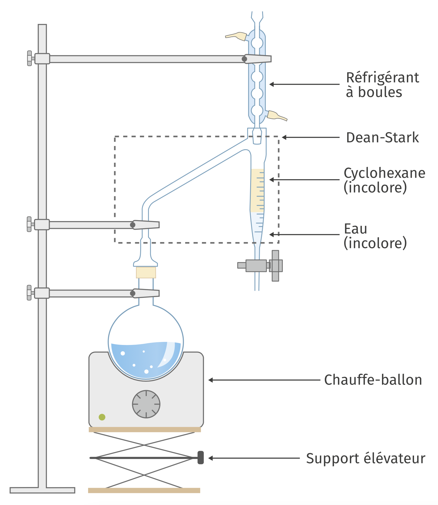

Protocole
-
Dans un ballon, introduire successivement $\pu{9,00 g}$ d’acide éthanoïque, $\pu{10,80 g}$ d’alcool benzylique ou phénylméthanol, $\ce{C6H5-CH2-OH}$, $\pu{10 mL}$ de cyclohexane, 10 gouttes d’acide sulfurique et quelques grains de pierre ponce. Installer l’appareil de Dean et Stark et le remplir de cyclohexane, installer le condenseur à eau puis porter le mélange à ébullition et l’y maintenir pendant environ 45 minutes. 
-
Retirer le chauffe-ballon puis, en laissant branché le condenseur, refroidir le ballon d’abord à l’air puis dans un bain d’eau froide. Éliminer l’eau recueillie dans l’appareil de Dean et Stark.
-
Verser le mélange réactionnel et la phase organique restant dans l’appareil de Dean et Stark, dans une ampoule à décanter.
-
Laver le tout avec $\pu{50 mL}$ de solution de chlorure de sodium puis, après avoir éliminé la phase inférieure aqueuse, avec $\pu{50 mL}$ de solution d’hydrogénocarbonate de sodium.
-
Éliminer à nouveau la phase aqueuse et sécher la phase organique sur sulfate de magnésium anhydre.
-
Transvaser la phase organique séchée dans un ballon à distiller. Ajouter quelques grains de pierre ponce et réaliser un montage de distillation fractionnée.
-
Distiller le mélange tant que la température reste voisine de 80 °C. Récupérer le résidu dans un ballon taré et déterminer sa masse $m$.
Données
| Masse volumique ($\pu{g.mL-1}$) | Température d’ébullition (°C) | Solubilité dans l’eau | Solubilité dans le cyclohexane | |
|---|---|---|---|---|
| acide acétique | 1,050 | 118 | totale | bonne |
| phénylméthanol | 1,042 | 206 | faible | très bonne |
| ester $E$ | 1,056 | 215 | très faible | très bonne |
| eau | 1,000 | 100 | – | très faible |
| cyclohexane | 0,780 | 81 | très faible | – |
Questions
- Sachant que le cyclohexane n’a qu’un rôle de solvant, écrire l’équation de l’estérification étudiée.
Citer le nom de l’ester formé.
Durant le chauffage, on observe que les vapeurs qui se condensent dans le réfrigérant se séparent dans l’appareil de Dean et Stark en une phase aqueuse qui s’accumule dans le réservoir de récupération et une phase organique qui, mélangée au cyclohexane préalablement introduit dans ce réservoir, retourne dans le ballon par effet de trop plein.
-
Où se situe la « phase aqueuse qui s’accumule dans le réservoir de récupération » par rapport à la phase organique ? Pourquoi ?
-
Quel test simple permet de vérifier la présence d’eau dans la partie inférieure de l’appareil de Dean et Stark ?
-
Quel intérêt présente ce dispositif pour la synthèse de l’ester ?
-
Quelle masse maximale d’eau peut-on ainsi recueillir ?
-
Pourquoi convient-il de refroidir le mélange réactionnel avant de procéder aux lavages ?
-
À quoi sert le lavage à l’aide de la solution de chlorure de sodium ? Comment vérifier, par un test simple, que ce rôle a bien été tenu ?
Lors du lavage à l’aide de la solution d’hydrogénocarbonate de sodium, on observe un dégagement gazeux.
-
Quelle en est la nature ? Écrire l’équation de la réaction qui produit ce dégagement.
-
De quel constituant la phase organique est-elle ainsi débarrassée ? Pourquoi ce constituant quitte-t-il la phase organique ?
-
Après le séchage, que reste-t-il dans la phase organique ?
La dernière étape est une distillation fractionnée.
-
Faire un schéma légendé du montage utilisé.
-
Quelle est la nature du distillat ? Quelle est celle du résidu ?
-
Dans une expérience, on a obtenu une masse $m = \pu{13,5 g}$ d’ester ; déterminer le rendement de cette synthèse. Conclure.